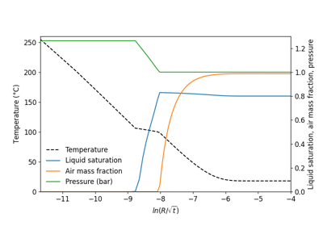

Heat pipe in cylindrical geometry (EOS3)#
Heat pipes are systems in which an efficient heat transfer takes place by means of a liquid-vapor counterflow process, with vaporization and condensation occurring at the hot and cold ends, respectively. Heat pipe processes occur naturally on a large scale (kilometers) in two-phase geothermal reservoirs, and they may be induced artificially if heat-generating nuclear waste packages are emplaced above the water table in partially saturated geologic formations.
The present problem models such high-level nuclear waste emplacement in an approximate way. This problem corresponds to the sample problem No. 2 of TOUGH2 User Guide.


Plot profiles